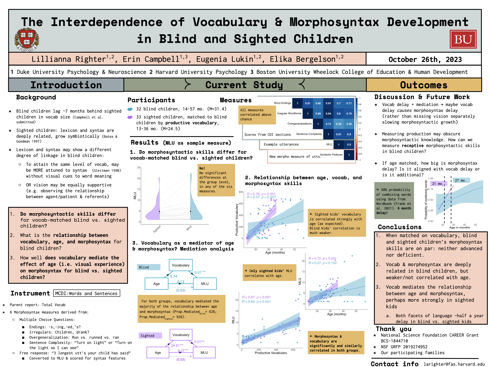

<div class="container" id="main">
 <div class="row">
  <div class="12u">
   <div class="content">
    <!-- Content -->
    <article class="box page-content">
     <header>
      <h2>
       The Interdependence of Vocabulary
       <br/>
       <br/>
       and Morphosyntax Development in
       <br/>
       <br/>
       Blind and Sighted Children
      </h2>
      <h3>
       Righter, Campbell, Lukin &amp; Bergelson (2023)
      </h3>
      <h3>
       Presented virtually at MPAL 2023, held in Nijmegen, Netherlands
      </h3>
     </header>
     <div class="3u 12u(mobile)">
      <section class="box feature">
       <a class="image featured" href="../../files/presentations/OP2_12_Righter_Blind_Morphosyntax.pdf">
        
       </a>
      </section>
     </div>
     <h4>
      Abstract
     </h4>
     <p>
      Recent work finds that blind toddlers lag ~7 months behind their sighted peers in productive vocabulary size (Campbell et al., under review). However, vocabulary acquisition may be more closely tied to the lack of visual input than other linguistic skills because many cues to early-learned word meanings are visual (e.g. shared gaze, salience of objects or events out of reach; Tomasello &amp; Farrar 1986; Yu &amp; Smith 2012). Vision’s impact on other facets of language learning are unclear. Morphosyntactic acquisition may be propelled by lexical growth and information in the linguistic signal (Wojcik et al. 2017), rather than inferences about observed referential relationships (Dominey &amp; Dodane 2004). Here we ask whether blind children differ from vocabulary-matched sighted peers in morphosyntactic skills, and examine the relationships between age, vocabulary, and morphosyntax across these groups.
We matched 32 blind children (14-57mo.) to 32 sighted children (24–36mo.) by productive vocabulary and compared their performance on the Sentences &amp; Grammar part of the Am.English Words &amp; Sentences CDI (Fenson et al, 1994).  This provided  4 morphosyntax scores: Word Endings, Irregulars, Overgeneralizations, and Combination Complexity. We also derived 2 measures from parents’ examples of children’s 3 longest utterances: Mean Length of Utterance (MLU) and a new measure, Syntactic Features, quantifying e.g.  agreement, extraction and negation, to tease apart sentence length and complexity.
We found that  blind and sighted children did not differ on any of our 6 morphosyntactic measures (ps&gt; .05; paired Wilcoxon Test).  Moreover, productive vocabulary size and morphosyntax scores were similarly and strongly correlated across groups (Rs .4-.9; ps&lt;.0125).  In contrast, while age and morphosyntax correlated in blind children for 1/6 measures (Combination Complexity), they correlated in sighted children for 6/6 measures. Finally, a mediation analysis tested whether vocabulary growth accounts for the relationship between age and morphosyntax. With age, all children produced more words (βsighted=39 words/mo.;  βblind=10 words/mo.) and more complex morphosyntax (βsighted=.74 morphemes/mo., βblind=.12 morphemes/mo.), though monthly growth was significantly slower for blind children (Vocab: z = -2.45, p = 0.01; MLU: z = 2.40, p = 0.02). For both groups, vocabulary mediated the majority of the relationship between age and morphosyntax (Prop.MediatedBlind= 62%; Prop.MediatedSighted= 92%); bootstrapping analyses indicated that the indirect effect of vocabulary on 5 of 6 measures was significant for both groups.
This work provides first steps in considering the links between age, vocabulary, and morphosyntax in the context of divergent sensory experience.  On one hand, we find a tight vocabulary and morphosyntax link regardless of sensory input. This supports longstanding ideas regarding the inseparability of the grammar and the lexicon (Bates &amp; Goodman 1997) and builds on established theories of how children uncover meaning from structure (Gleitman 1990): language knowledge begets language knowledge. On the other hand we find that age and morphosyntax links diverged in our blind and sighted groups, both across measures and in rate of change with age. At the same time, vocabulary mediated the majority of  the age to morphosyntax relationship, for almost all measures.
We suggest that slower morphosyntactic advancement may be explained by slower early vocabulary growth, tentatively proposing that  visual experience may be more critical for building a vocabulary than for extracting morphosyntactic regularities from linguistic input. Notably, blind adults readily attain fluent language (which even surpasses sighted adults on some measures; Loiotile et al. 2021). Investigating the mechanisms by which blind children catch up is ripe for future research.
     </p>
    </article>
   </div>
  </div>
 </div>
</div>
